Aprendizaje Online

Bandit
- CTF escalable en el que se aprenden el uso de comandos básicos de Linux como:
ls, cd, cat, file, man, du, find, grep, sort, uniq, base64, tr, tar, gzip, bzip2, etc.
- A medida que avanzamos por los niveles, comienzan a verse comandos más complejos de redes y Ciberseguridad como:
ssh, telnet, nc, ncat, socat, openssl, nmap, netstat, ss, cron, chmod, git, etc.
- La primera vez que lo completé, en la mayoría de niveles necesité seguir Writeups para conseguir las Flag,
un par de años más tarde, y tras hacer varios laboratorios de HackTheBox, conseguí llegar al nivel 22 sin ayuda.
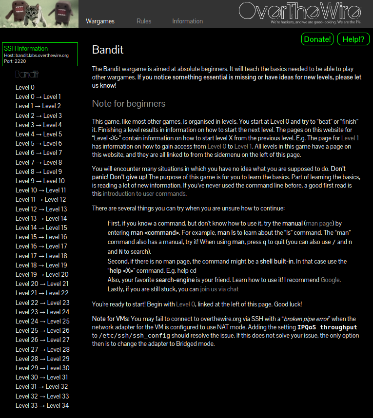
Natas
- CTF escalable en el que se aprenden técnicas de Hacking Web:
- Lo intenté sin ayuda y conseguí llegar al nivel 4, finalmente tuve que buscar un Writeup y descubrí Burpsuite.
- Estuve un tiempo viendo tutoriales de Burpsuite y Caido, y lo aparqué para comenzar este curso de Elaboración de Páginas Web.
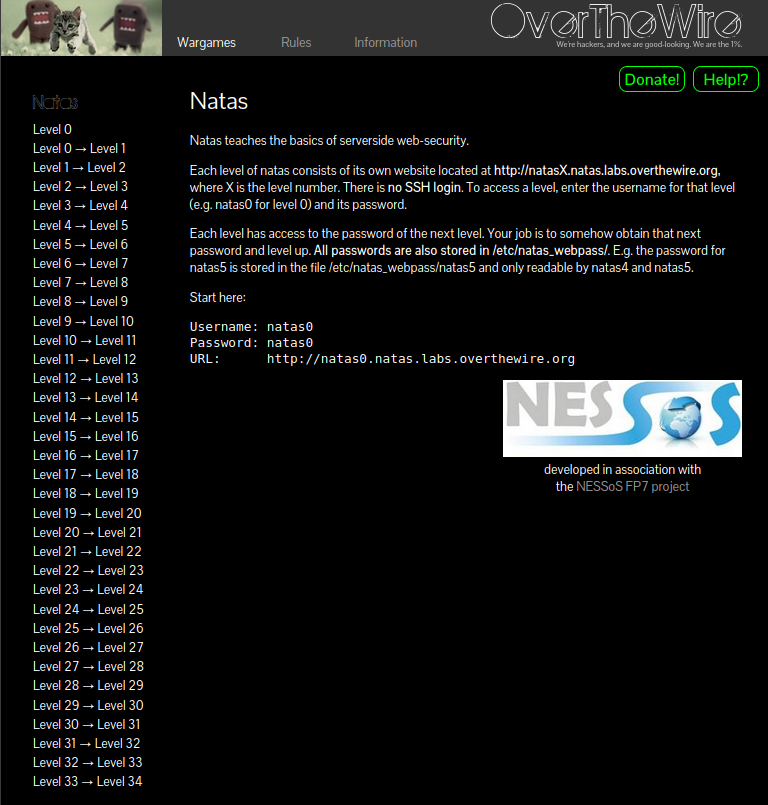
- Plataforma online de Ciberseguridad y Hacking Ético
- Laboratorios de pruebas y retos simulando entornos reales.
- He realizado todas las máquinas gratuitas de nivel fácil, y varios retos Sherlock, estoy empezando el nivel medio.
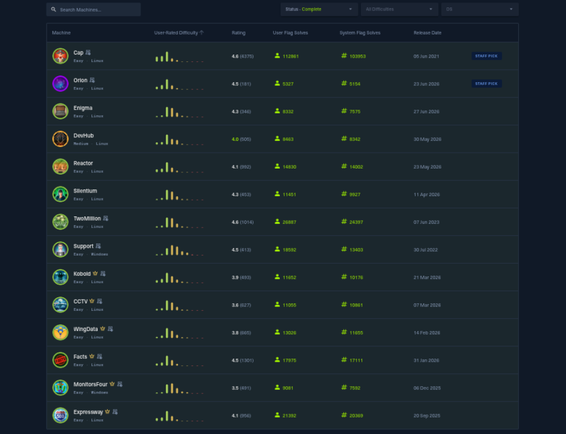
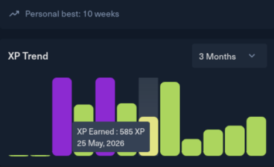
Proyectos Personales
castDrop.py
- Aplicación de control para dispositivos ChromeCast (Linux/Termux).
- Descubrimiento de dispositivos en red.
- Detecta múltiples protocolos: Google Cast, AirPlay, Spotify, Sonos, DLNA, ...
- Obtiene información multimedia: Aplicación, Estado, Volumen, Título, Canal, Duración, URL, ...
- Opciones de control multimedia: Pausar/Reanudar, Forzar Cierre, Subir/Bajar Volumen, Mutear/Desmutear, Inyectar Contenido, ...
- Opciones de control Bluetooth (*en pruebas)
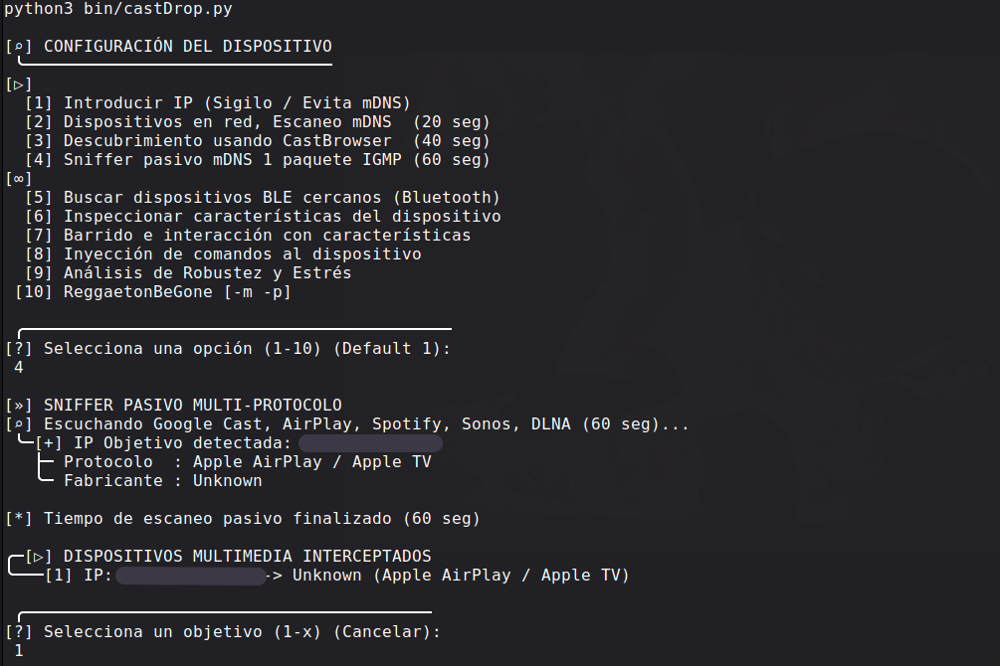
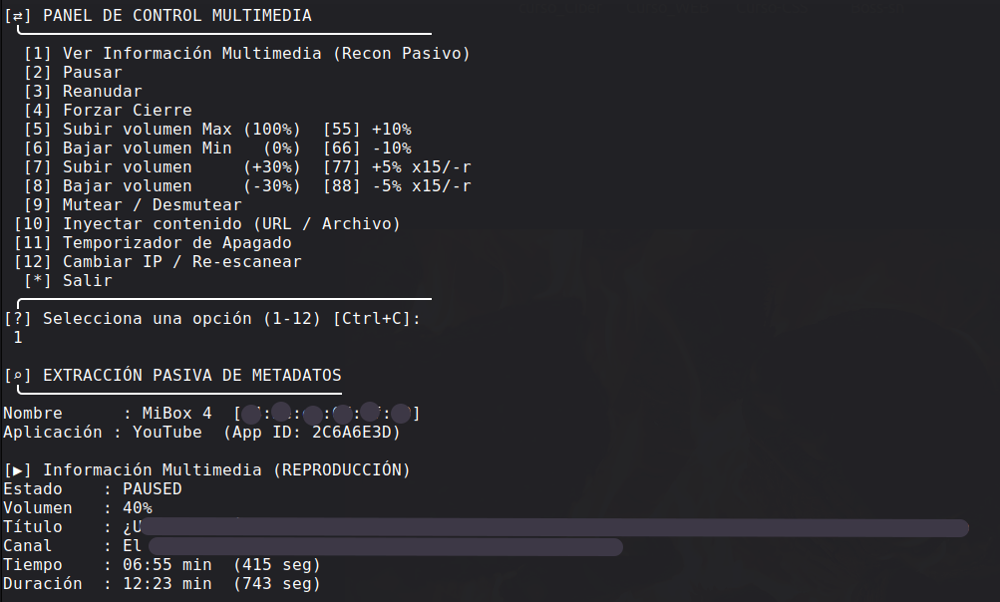
cve_monitor.py / cve_monitor_LIST.py
- Aplicación/bot de consulta y filtrado de alertas de seguridad (CVE).
- Puede funcionar integrando un bot de Telegram o por consola.
⠀⠀ ・Busca *linux en los últimos CVE modificados en nist.gov (cve_monitor_LIST.py: busca iterando sobre listas definidas)
⠀⠀ ・Busca si disponen de parche y/o exploit
⠀⠀ ・Comprueba que no estén ya registrados en la base de datos local
⠀⠀ ・Muestra métricas del CVE y envía la alerta al ID de Telegram si está configurado
⠀⠀ ・Guarda el CVE en la base de datos local
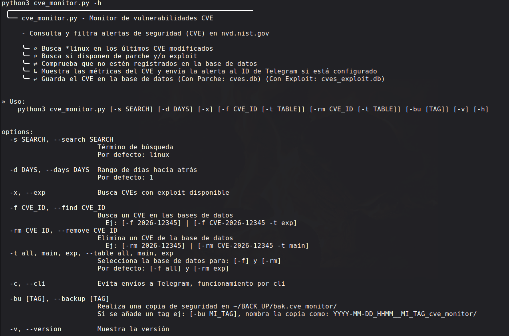
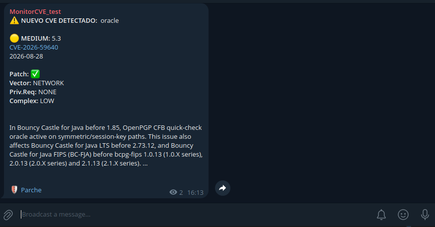
Name_cleaner.sh / .py
- Borra / Renombra / numera por tipos los archivos de una carpeta.
- Edita los metadatos si son compatibles con Exiftool.
- Renombra todos los archivos de una carpeta:
⠀⠀ ・Borrando o cambiando una parte en común (www.descargas.com, Album-Hits 2025)
⠀⠀ ・Agregando un término al final (--Estilo --Tipo)
⠀⠀ ・Numerando al principio del nombre, eliminando o no el nombre
⠀⠀ ・Eliminando la numeración del principio
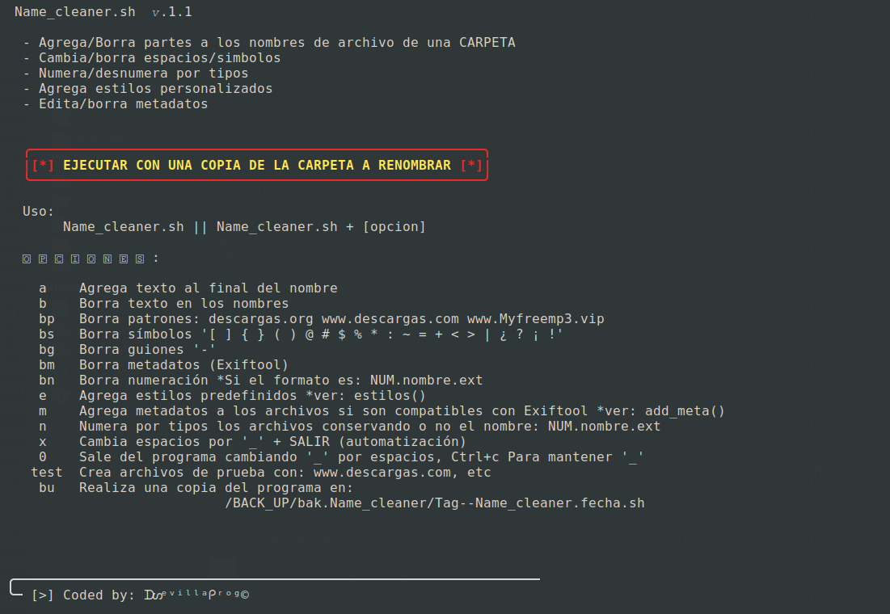
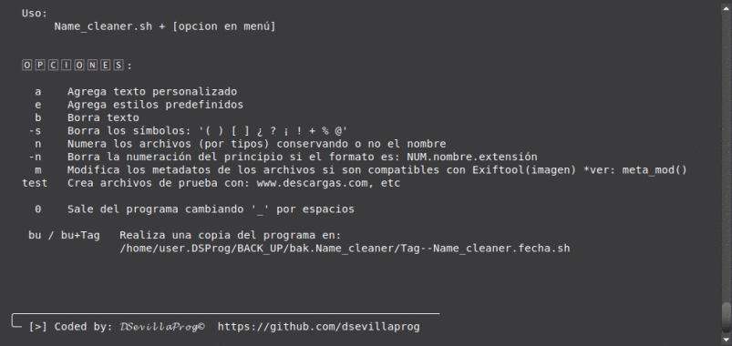
logFilter.sh
- Extrae y procesa direcciones IPv4 del archivo Apache/access.log o de archivo de IPv4 únicas.
⠀⠀ ・Filtra las que contienen peticiones maliciosas y por país
⠀⠀ ・Las consulta con herramientas online: curl, dig, host, nslookup, ip-api, rdap, VirusTotal, ...
⠀⠀ ・Las consulta en listas de reputación de amenazas (DNSBL): Abuse, Spamhaus, Barracuda, DroneBL, Sorbs
⠀⠀ ・Las añade a listas de baneo en función de los resultados
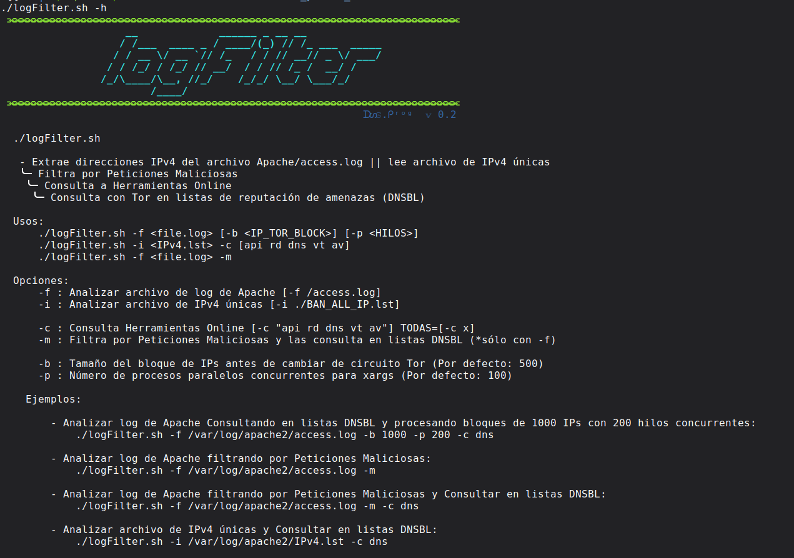
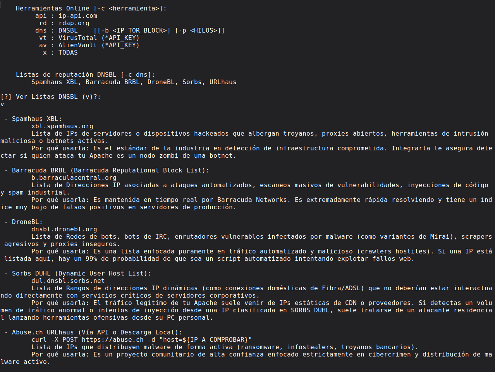
curl_dump.sh
- Descarga y extrae direcciones URL del código de una URL o de una lista.
⠀⠀ ・Descarga con curl las URL's
⠀⠀ ・Extrae las URL's del código de cada URL
⠀⠀ ・Vuelve a realizar el proceso
Media_converter.sh / .py
- Cambia el formato de archivos multimedia con ffmpeg.
- Convierte uno o todos los formatos de los archivos de la ruta de trabajo al formato elegido en una nueva carpeta.
- Convierte a formatos de codecs soportados por ffmpeg (aac, ac3, dts, flac, mp3, mpeg4, webp, ...).
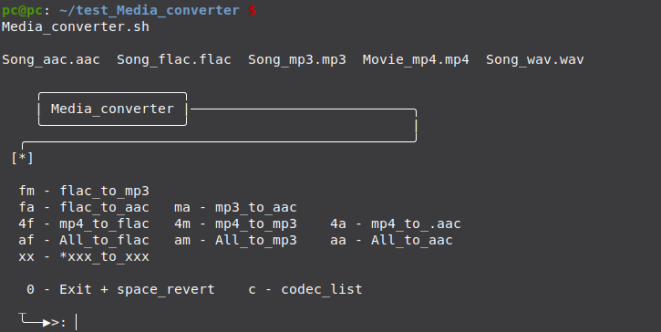
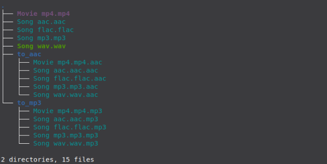
DShtb.sh
- Aplicación con múltiples herramientas de análisis y auditoría.
- Agiliza el reconocimiento y explotación de máquinas en HackTheBox, VulnHub, etc.
- Crea un objetivo, filtra y guarda los datos obtenidos, ejecuta herramientas y genera reportes.
- Integra: nmap, dirb, ffuf, gobuster, nikto, nuclei, wpscan, sqlmap, smbclient, cewl, crunch, msfconsole, ...
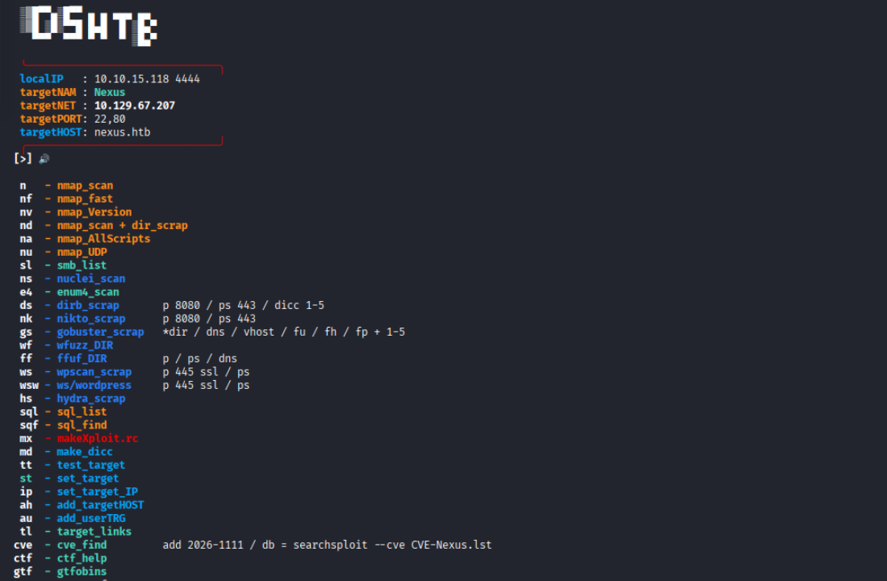
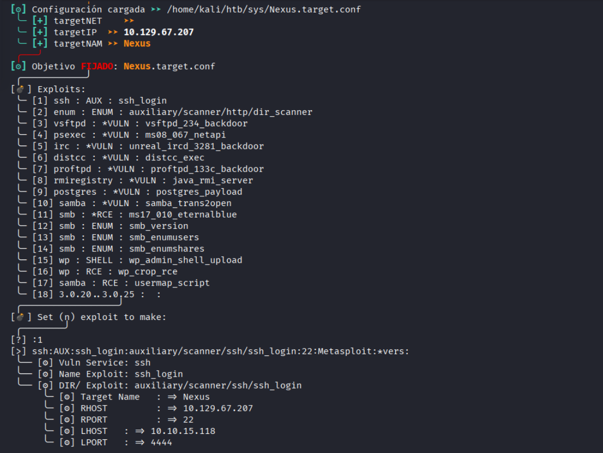
img_convert.sh
- Recorta, redimensiona, cambia de formato, y aplica múltiples filtros y efectos a las imágenes de una carpeta.
- Convierte Imágenes con ImageMagick.
- Modifica metadatos con Exiftool.
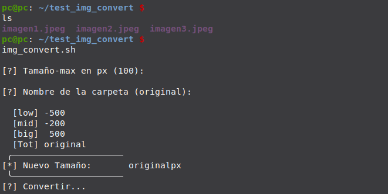
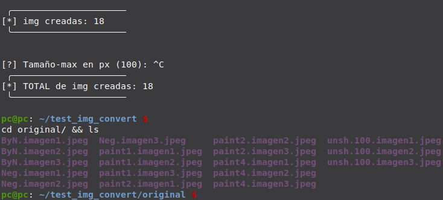
Sed_loop-R.sh
- Función de "Buscar y Reemplazar" recursiva para todos los archivos de una o varias extensiones dentro de la ruta de trabajo.
- Elije una extensión o modifica recursivamente todo un proyecto web (.html, .css y .js).
⠀⠀ ・Ejemplo, añadir la clase "mi-clase" a todas las etiquetas ul sin atributos:
⠀⠀ ⠀ Buscar: <ul>
⠀⠀ ⠀ Cambiar:<ul class="mi-clase">
⠀⠀ ・Ejemplo:
⠀⠀ ⠀ Cambiar lang="es-ES" por lang="en"
⠀⠀ ⠀ Cambiar dsevillaprog por RandomUser
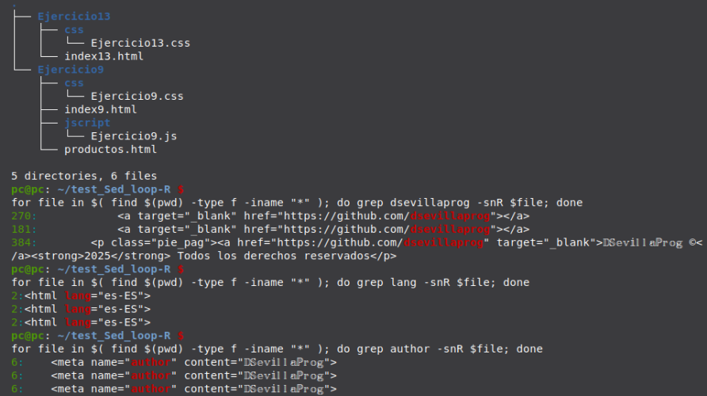
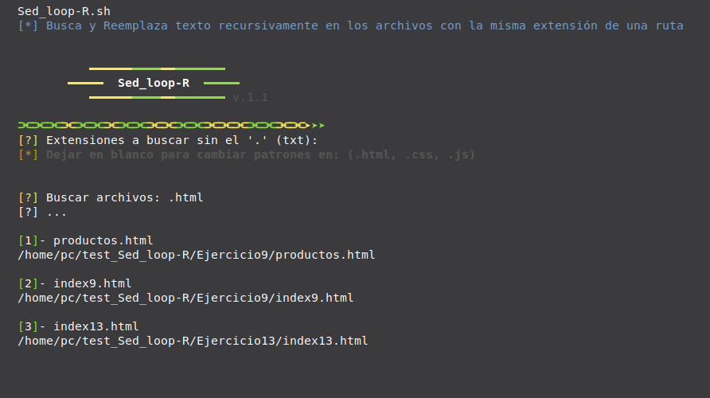
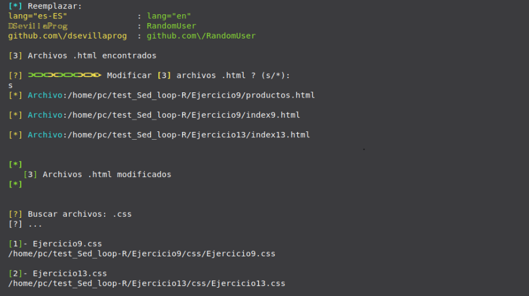
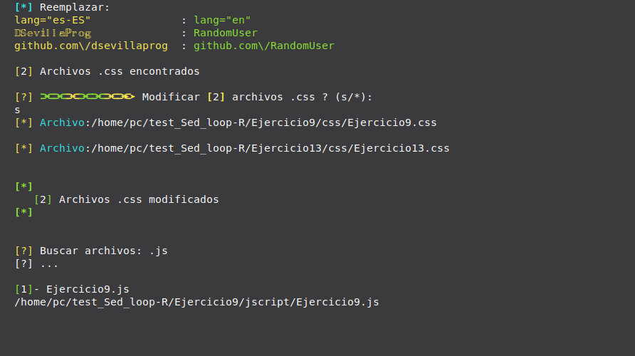
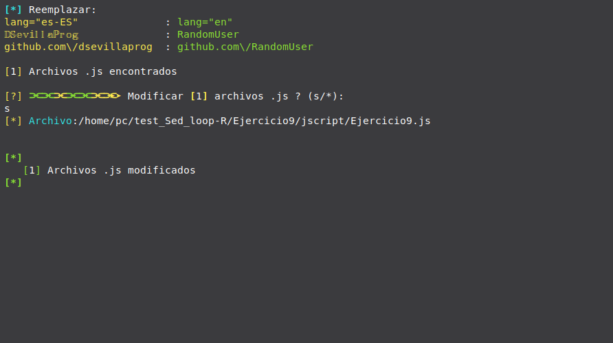
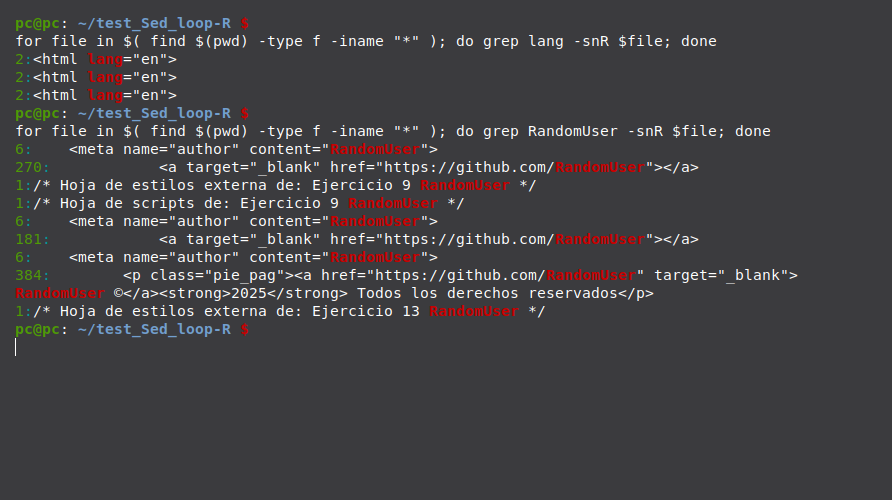
Roli-Sounds.sh / .html
- Base de datos personalizada de sonidos del teclado Roland GO:Keys.
- Clasifica y busca sonidos por: Tipo, Estilo, Cualidad, Efecto, Favorito, etc.
- Busca sonidos por una o varias cualidades: EP, delay:h, sustain:l, phaser, bass-fx, Soul, Rock, ...
- Crea/busca/modifica listas de estilos/cualidades.
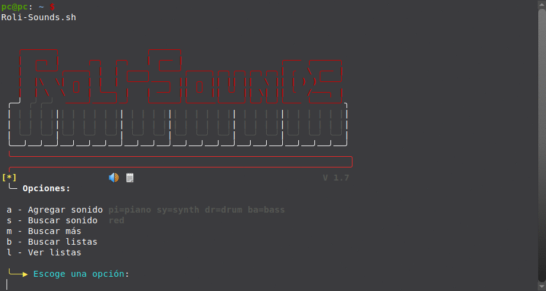
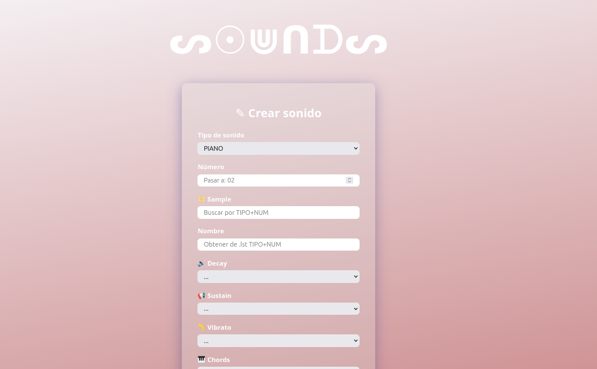
Eachine VR-D2Pro Circuit Bending
- Modificación de la electrónica de las gafas de FPV Eachine VR-D2Pro.
- Se le añaden conectores de entrada de video RCA y salida de audio Jack 3.5.
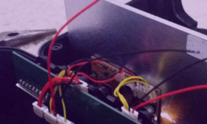
Casio SA-1 Circuit Bending
- Modificación de la electrónica del teclado Casio SA-1.
- Se le añaden switch de octavas y 3 niveles de reverb base con modulación mediante LDR.
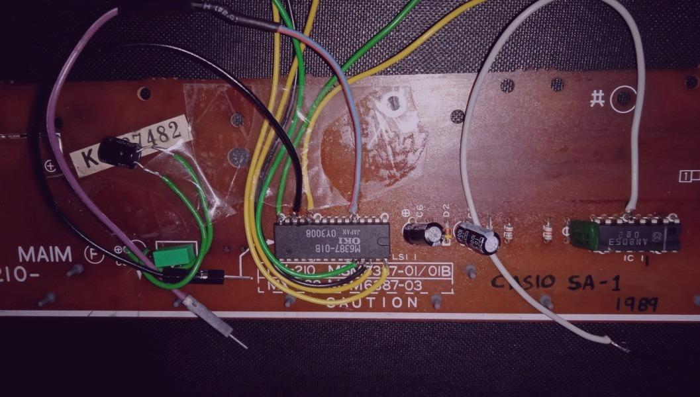
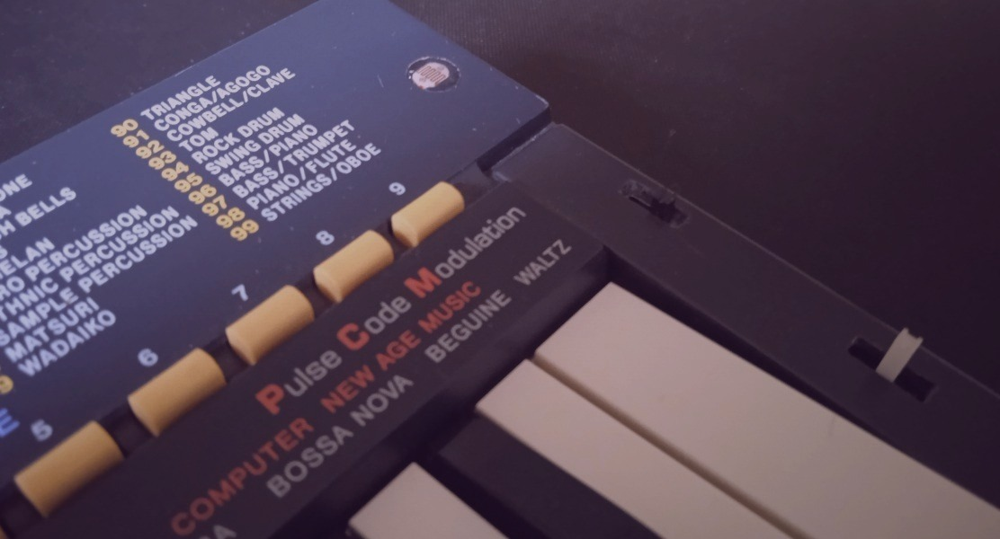
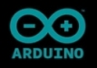
Alarma_GSM.ino
- Alarma realizada en Arduino con comunicación por módulo GSM.
- Permite conectar multitud de sensores y actuadores para su monitorización y control, accesos, presencia, niveles, tensiones, GPS, relés, contactores, ...
- Avisa mediante llamadas/sms a una lista números en el orden definido.
- Monitoriza/Activa mediante sms y/o llamadas los sensores/actuadores conectados.
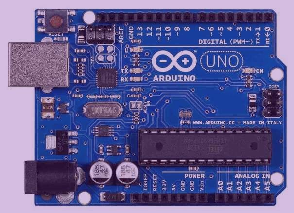
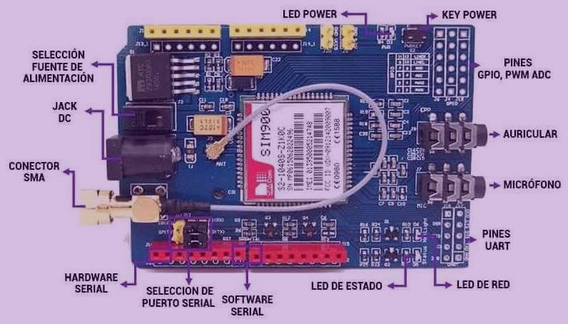
Autotube.sh
- Reproduce listas de Youtube y Spotify en bucle cambiando de IP.
- Conecta con un servidor VPN e inicia un bucle de reproducción:
⠀⠀ ・Reproduce con firefox los links de una o varias listas
⠀⠀ ・Hace una pausa personalizada para registrar la visualización
⠀⠀ ・Cambia de servidor VPN para renovar la IP
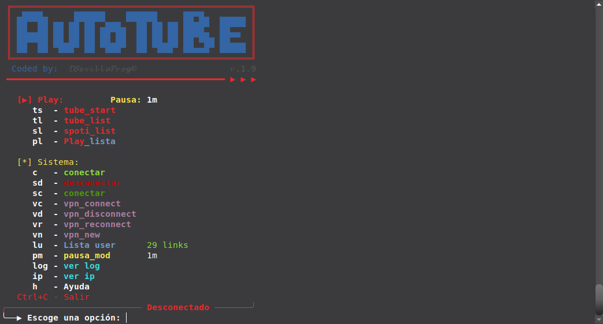
USB PorCotilla
- Conjunto de scripts (.cmd, .bat y .vbs), camuflados en una memoria USB con una "Carpeta Cebo" que los inicia al intentar abrirla.
⠀ » Una vez iniciados:
⠀⠀ ・Crea scripts y copia un archivo .mp3 en el sistema cotilla, estos serán ejecutados al reiniciar el equipo
⠀⠀ ・Crea claves de registro de Windows llamadas: Windows_Defender.cmd y Windows_System.cmd
⠀⠀ ・Listan en un .log el contenido de las carpetas principales del sistema cotilla
⠀⠀ ・Obtiene información del sistema cotilla mediante: SYSTEMINFO, GETMAC, IPCONFIG y NETSH
⠀⠀ ・Copia al USB el contenido de las carpetas: Escritorio, Descargas, Mis Documentos y Música
⠀* El usuario del USB Cotilla verá un error al intentar extraer el dispositivo ya que se encuentra ocupado.
⠀ » Al reiniciar el sistema:
⠀⠀ ・La pantalla se vuelve azul
⠀⠀ ・Se ejecuta un script simulando un borrado de disco y la instalación de un sistema virtual
⠀⠀ ・Se ejecuta otro script reproduciendo el archivo .mp3 y mostrando un mensaje de aviso
⠀⠀ ・El usuario cotilla sólo podrá detener el proceso mediante el administrador de tareas
⠀⠀ ・El proceso persistirá en cada reinicio hasta que el usuario cotilla elimine las claves de registro creadas
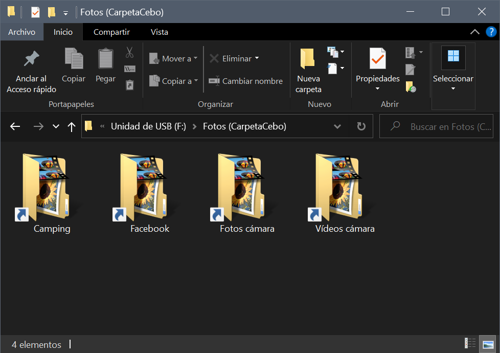
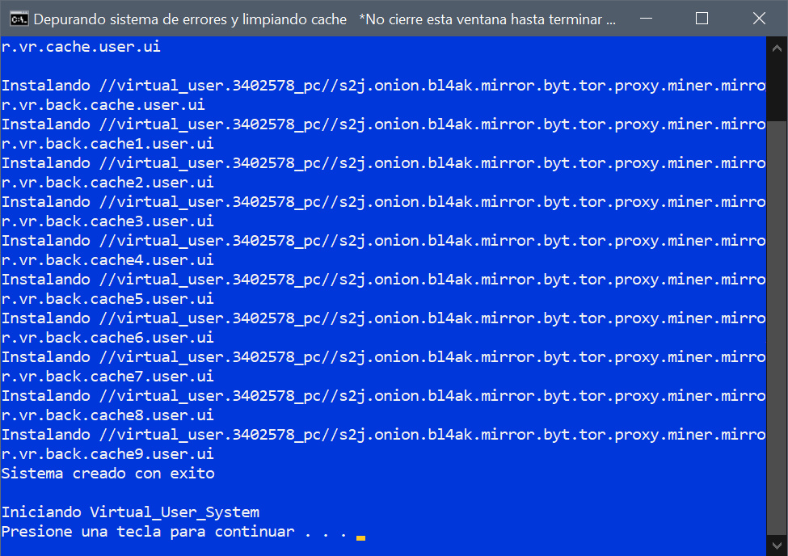
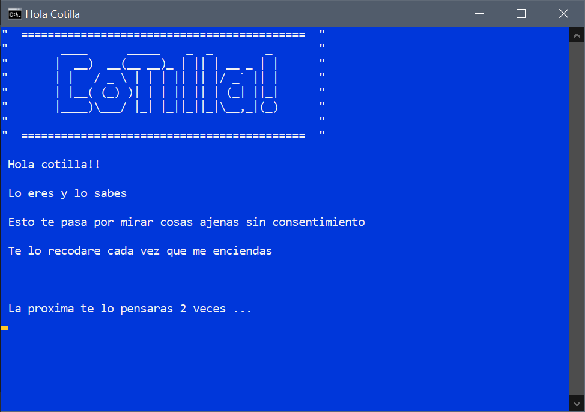
Buscadores-web (.bat, .sh, .html)
- Herramienta con múltiples buscadores, páginas web y recursos.
- Busca un término por categorías, en una o en todas las opciones.
- Cambia de IP mediante VPN para evitar bloqueos (.sh).
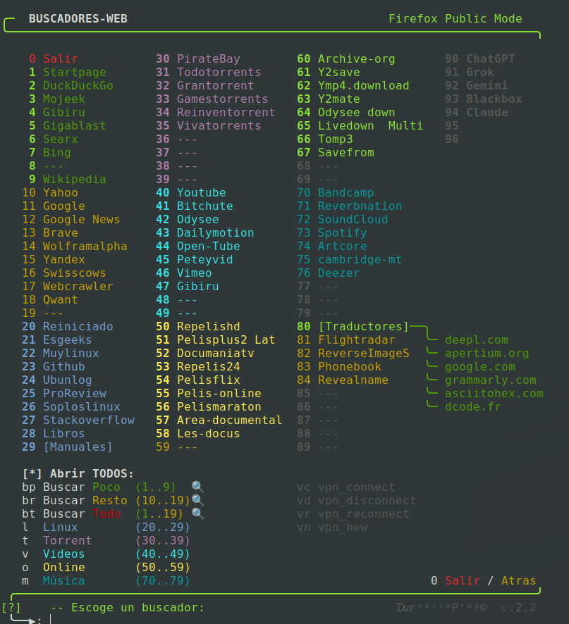
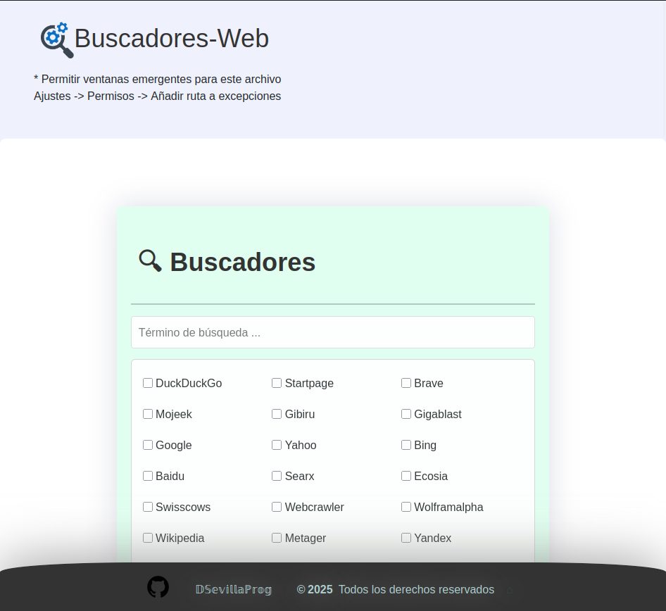
AFICIONES
Programación
Ciberseguridad
Electrónica
Arduino
Drones FPV
Edición de música